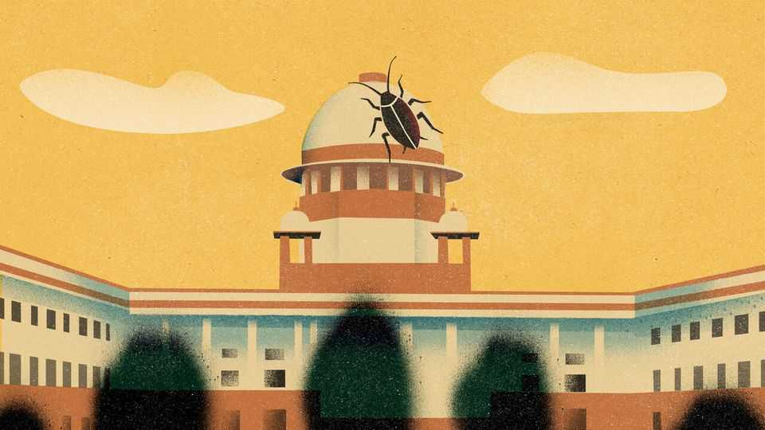

India’s republic of uncles
A cockroach meme rattles the country’s gerontocrats
June 4th 2026

LET ME TELL you how to identify an Indian uncle. A dead giveaway is the phrase “let me tell you”. It is inevitably followed by a thesis on what really ails the country. Another hallmark is unsolicited advice, veering from career counselling (“only girls study literature”) to dietary prescriptions (“eat five soaked almonds to build immunity”). But the defining feature of the Indian uncle is his bottomless disdain for the youth of today: feckless phone-addled softies, the lot of them. They need discipline.
The uncle reigns supreme across India’s divides of religion, caste and language. He earns his radioactive confidence through the simple act of reaching middle age, thereupon instantly gaining omniscience. But despite proselytising the Way of the Uncle on WhatsApp, his authority extends only to his own circle. The uncles who run India, however, know no such boundaries. They inflict their fossilised notions upon the nation. India is a republic of the uncles, by the uncles, for the uncles.
Thus does the country produce such infantilising policies as Gujarat’s plan to require parental sign-off before adult couples can legally marry. Or Goa’s mandatory uniforms for adult students at its public colleges. Or Delhi, where adults can vote at 18 and marry at 21 but cannot enjoy a beer until they are 25.
Thus too are Indians subject to the pronouncements of learned higher-court judges, over 85% of whom are middle-aged men. The Calcutta High Court in 2023 advised young women to “control sexual urges” rather than “enjoy the sexual pleasure of hardly two minutes”. A judge in Karnataka observed that it would be “better for the nation” if social-media access was restricted until the age of 18—or even 21. And on May 15th the chief justice of the Supreme Court lamented that “There are youngsters like cockroaches, they don’t get any employment, they don’t have any place in profession”.
Within a day of the chief uncle’s remarks, an Indian student in Boston had set up a joke political outfit, the Cockroach Janta Party. It swiftly drew over 22m followers on Instagram, more than twice as many as the ruling Bharatiya Janata Party (BJP), and gave rise to an infestation of commentary on the pent-up frustration of the young. The chief justice clarified he just meant people with bogus law degrees but could not resist adding that the “youth have great regard and respect for me.” This is the delusion of every uncle.
The Indian uncle’s toolkit for dealing with criticism is limited. At home it starts and ends with “Don’t talk back okay!” The response of the Republic of Uncles followed the same instinct, backed by the might of the state. Domestic intelligence raised “national-security concerns”. The government restricted the roaches’ X account as a threat to the sovereignty of India. One BJP leader called the meme a “cross-border influence operation”. It is inconceivable to the Indian uncle that young people might possess agency.
It is inconceivable, too, that the uncles might not know all. Half the population is under 30. India produces 5m graduates every year, but just a third find regular salaried jobs. Yet the uncles do not ask why job creation is so lacklustre. Easier to blame the youth. Some years ago Narayana Murthy, a septuagenarian billionaire, exhorted young people to work 70 hours a week, declaring that “India needs a stronger work ethic.” Not to be outdone, the chairman of another firm advocated a 90-hour week: “What do you do sitting at home? How long can you stare at your wife?”
Many youngsters already work such hours. They go to school or university. They attend extra coaching classes. And when they get home they study some more. In May more than 2m candidates sat a national exam for around 130,000 medical-college seats. Nine days later the testing agency invalidated their efforts because papers had leaked. The same month 1.8m pupils received the results of class 12 exams—the single most important test in Indian schooling. Those, too, were full of errors. A parliamentary committee is investigating both fiascos. The uncles will grade the uncles.
It is a minor miracle that the youth, faced with parental pressure, overbearing states, systemic incompetence and poor job prospects, respond only with a silly meme. Their peers in Nepal, Bangladesh and Sri Lanka have been rather more heavy-handed with their own ageing leaders. Here is some unsolicited advice for the uncles of India: let the cockroaches have some fun on the internet. It is for your own good. And don’t forget your five soaked almonds. ■
Subscribers to The Economist can sign up to our Opinion newsletter, which brings together the best of our leaders, columns, guest essays and reader correspondence.